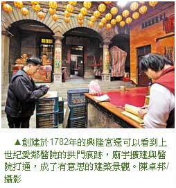

三峽興隆宮求偶求子兼求財
龍年求姻緣、生龍子、求財運，到三峽興隆宮一次拜齊全。
黃麗如｜中國時報／旅遊∣2012年1月21日
過年祈福不用東奔西跑，僅僅200公尺的三峽老街從街頭走到街尾，神佛齊聚、連基督也來大團圓，求神拜佛一次搞定。尤其在老街上的「興隆宮」網羅各路神祇，當中「月下老人」法力無邊，據統計每年成功牽成的姻緣超過一百對。
「只要誠心誠意，月老一定會幫你找到好歸宿。」興隆宮服務台的阿姨熱心的跟想要祈求姻緣的女孩子們打氣。自從興隆宮主委林照裕對外宣布近年來駐廟月老每年成全的情侶超過一百對，遊玩三峽就不再只是逛老街，求姻緣成了最夯的祈福之旅。
■求月老 午前進行才有效
廟方表示，求姻緣務必在午時前進行（上午11點以前），要準備紅線、冰糖、福圓（桂圓）、鉛錢四種東西，這四種東西都必須是雙數，只有紅線是單數。解說員說：「鉛錢取自於台語鉛與緣同音、福圓有圓滿的象徵、冰糖代表甜蜜，至於紅線單條是把自己帶去新的紅線，換成月老手上經過加持的姻緣紅線。」
求姻緣靠的是誠意，必須仔細的說出自己的出生年月日、住址與中意的對象條件，說得愈細月老愈能精準的幫信眾物色。
■走一趟 各路神明全都拜
廟方也提醒，月老很喜歡幫大家牽姻緣，所以拜月老無需擲筊，只要誠意和神明祈求，再換上月老手中姻緣線即可，換好線後把鉛錢放入紅包袋，再用姻緣線把紅包袋纏成小小的長方形，過過香爐就可以放在自己的包包裡，一路守護今年的戀愛運。興隆宮的姻緣線牽起龍年求偶的一線生機。
三峽興隆宮已經有200多年的歷史，在地人都稱興隆宮為「媽祖廟」，長年守護著三峽的子民。除了正殿的媽祖，興隆宮還供奉文昌帝君、魁斗星君、觀世音菩薩、中壇元帥、五路財神、月下老人、註生娘娘等，神明的業務擴及各個領域，所以過年走一趟興隆宮，事業、錢財、考試、姻緣、健康方方面面都得到包庇。
■電腦化 點燈作業很科技
每逢大年初一，廟方的光明燈點燈作業更是達到電腦化的地步，祈福者捐香油錢後，就會得到一張祈福紙，拎著這張紙把廟裡的神明拜一圈，再到太歲爺前念完頌詞，最後把祈福紙火化、直達天廳，這幾乎成了三峽人每到過年一定會走一遭的祈福旅程。
特別提醒，從前殿通往後殿的祈福之路上，會經過寫著「行政大樓」的廊柱建築，這片廊柱拱門的前身是三峽名人李梅樹哥哥所開的「愛鄰醫院」，古典的建築呈現三峽老街迷人的歷史氣息，現在與興隆宮結為一體，更是奇妙的建築景觀。
到祖師廟拔豬毛好運一整年
走訪興隆宮當然要一起順道拜只有50步之遙的三峽祖師廟。大年初六是祖師爺的生日，會有神豬比賽，建議遊客除了看豬公，別忘了在中午儀式結束後去拔第一名神豬的豬毛，據說會帶來一整年的好運。至於在三峽老街尾的三峽長老教會是很有味道的歷史建築，可以感受基督教的神聖與潔淨氣息。
優遊河左岸 啜飲鳶山咖啡
過年期間的三峽老街總是擠滿了人，傳統的建築、應景的小吃，讓老街的氣氛就像「恭喜恭喜恭喜你」歌曲一般充滿節慶氣息。若想喘口氣、換一種過年的滋味，不妨拜拜完後，轉入巷子、往上爬行，體驗三峽過年的好元氣。
■親近山水 多條步道任逍遙
有山有水的三峽很適合年節走春，沿著三峽河畔的八張左岸親水步道呈現李梅樹畫中恬靜自然的詩意水色；若喜歡登高望遠的旅人，三峽也有多條親山步道可以選擇，從老街底往右轉、向上爬的鳶山步道就是很適合散步的大眾路線。
「鳶山景觀咖啡」就在通往鳶山山頂的半山腰，若懶得走到最上方的鳶山大鐘，在這個靜謐的角落歇息、賞景、用餐、喝咖啡是相當雅興的事情。
■有機咖啡 費時11年栽培
老闆易志昌是個咖啡迷，十多年前在連鎖咖啡廳當咖啡師，後來想煮出自己風味的咖啡，便在三峽老家的山坡上栽植咖啡樹且堅持有機栽培，經過多年的實驗與失敗甚至跌斷骨頭，終於種出有三峽風味的咖啡，「因為今年採收季的雨水較少，所以今年咖啡的味道會比較厚，與往年不同。」如此賣力的種咖啡，一年收成也只有60公斤的產量，非常稀少。
要品味易志昌的咖啡只能在這家餐廳，不同於一般標榜的台灣咖啡貴得驚人，在這裡只要點餐多加30元，就能品味老闆花費11年心血栽植出的鳶山咖啡。易志昌的餐點也不馬虎，都是自家烹調，當中「豬公肉」套餐是鎮店之寶，家傳的魯肉滋味用新鮮的豬後腿肉滷製，口感清爽又下飯。窩在鳶山景觀咖啡，看著三峽天色的變換與群山環繞的市區街景，尤其入夜後街燈點點，氣氛誘人。
三峽福氣之旅INDEX
★興隆宮/三峽鎮民權街50號/02-26715643
★祖師廟/三峽鎮長福街1號/02-26711031
★三峽長老教會/三峽鎮民族街1號/02-26711981
★鳶山景觀咖啡/台北縣三峽鎮中埔14-6號/02-26718062，周一休，除夕到初二休
★三峽碳中和樂園/台北縣三峽鎮中正路三段262號/02-26716880，周一休，需預約參觀